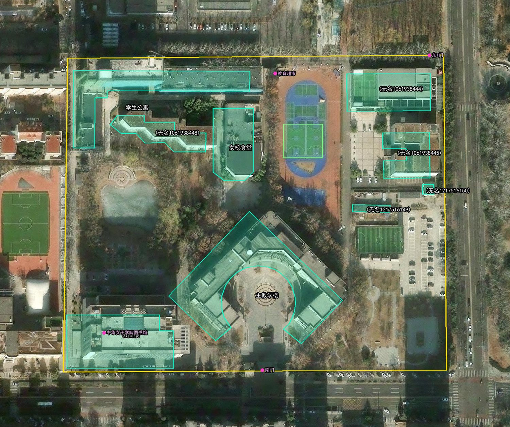
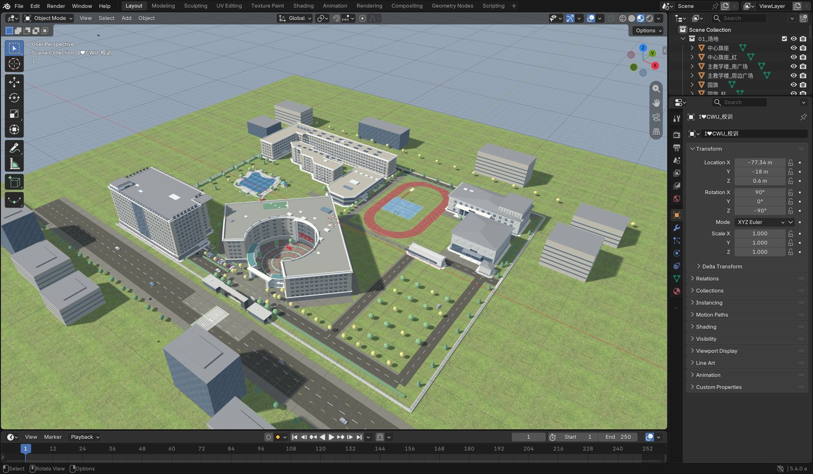
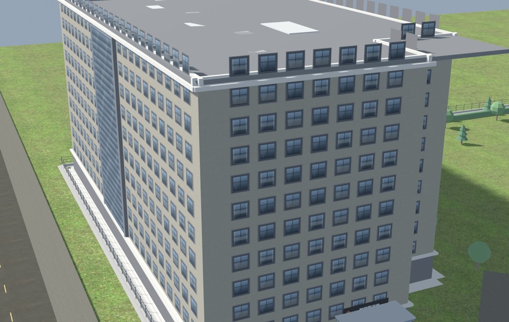
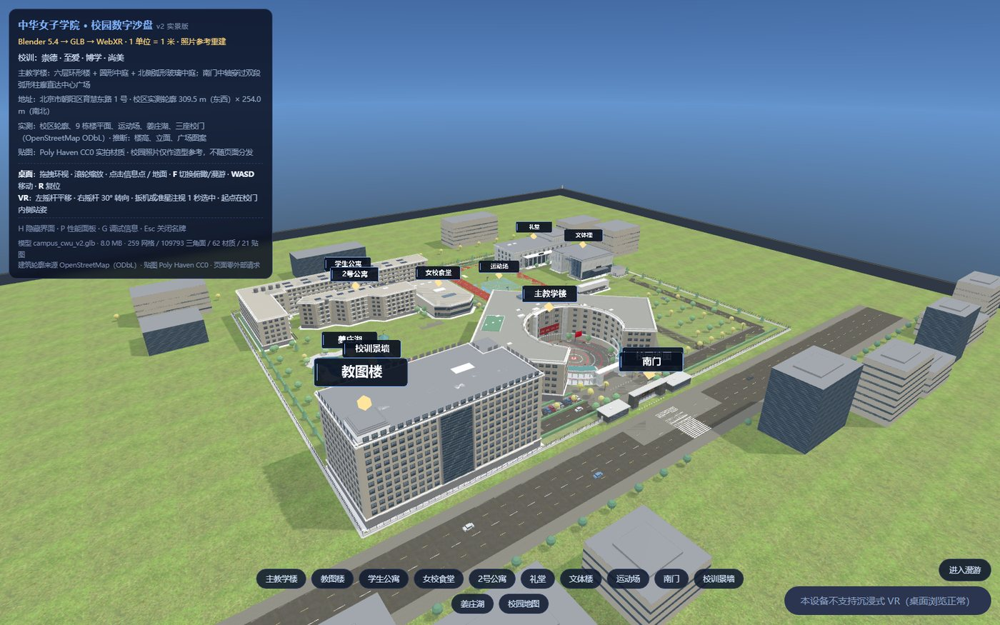
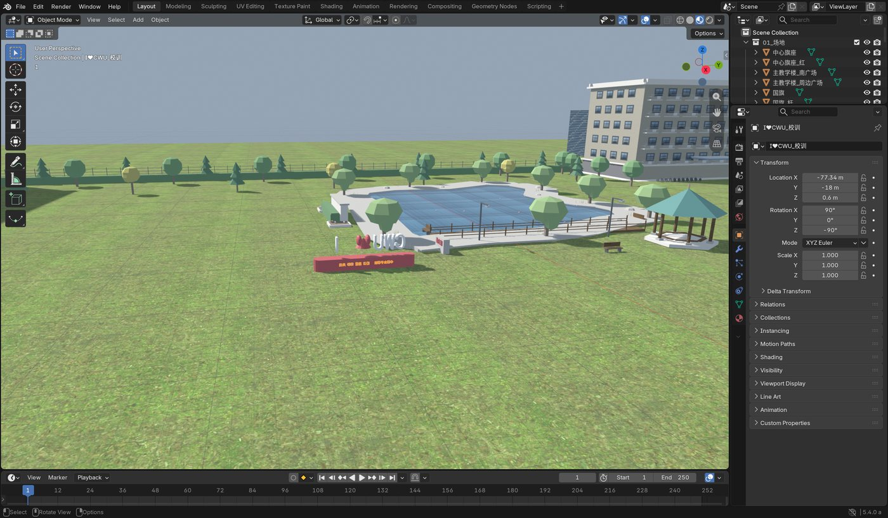

① 零安装
学生不需要装 Blender、不需要装 DSH。打开浏览器访问教师机上的控制台即可。 机房 36 个机位、40 个人，靠「每台装一套环境」是不现实的——这是唯一能落地的形态。
2026-11-11 · 4 学时 · 180 分钟 —— 这一课不讨论「AI 能不能生成 3D」，只回答一个问题：Agent 怎么把一条命令真正送到 Blender 的 bpy 主线程上，并且每一步都有返回值可以验证。前两节 90 分钟全是练，后两节 90 分钟才讲。
上一轮（第 8 次课 · 10-28）证明「这条链能通」；这一轮要证明「它真能干活」
第 8 次课已经讲过 MCP 的概念，也搭通了一条 Maya 链路——但那条链路是 commandPort 同构的仿真命令层：协议、工具面、调用链都能演示，唯独证明不了「它真能干活」。这一节把同一套架构搬到本机真实安装的 Blender 5.4.0 Alpha 上：bpy 真执行、EEVEE 真渲染、原生 GLB 真导出。上一节证明「这条链能通」，这一节证明「它能干活」。
| 节次 | 时长 | 内容 | 产出 |
|---|---|---|---|
| 第 1 节 | 45 min | 教师演示 10′ + 分组 5′ + 各组执行 30′ | 场景里出现各组构件 |
| 第 2 节 | 45 min | 执行 30′ + 合景 10′ + 提交 5′ | 全景图 + 四样提交物 |
| 第 3 节 | 45 min | 讲授 1：三个角色 + 为什么不是「直接生成」 + 一条命令怎么走完 | 学生笔记 |
| 第 4 节 | 45 min | 讲授 2：我的真实过程（决策分析）+ 多 Agent 分工 + 照片重建路线 | 课后思考题 |
| # | 问题 | 一句话判据 | 本页在哪 |
|---|---|---|---|
| ① | 三个角色分别是谁 | MCP 不是模型、不是插件，它不产生 3D | 一、三个角色 |
| ② | 为什么不用文生 3D | 生成式是抽卡，MCP 是下指令 | 二、为什么不直接生成 |
| ③ | 一条命令怎么走到 bpy | 中间隔着 4 层进程和 1 条线程边界 | 三、一根旗杆 / 四、一条命令 |
| ④ | 实战里会翻什么车 | 「超时」和「被拒绝」要分开查；「看不到」不等于「没做出来」 | 五、真实过程 |
| ⑤ | 怎么验收 | 数字 + 图像 + 断言，三样缺一不可 | 七、成果与验收 |
页面里的截图、数字、报错文本都不是示意，是这次构建过程中真实产生的：Blender 界面截图、教图楼渲染、OSM 轮廓叠卫星影像、线上 WebXR 页面截图、湖边的「I❤CWU」标识。凡是查不到确切依据的部分，一律在正文里标注为「示意」或「估算」，不装作是真的——这条规矩在第五章会反复出现。
该成果页是单文件 11.9 MB、零外部请求的 WebXR 页面，首次打开会稍慢；three.js 与模型都已内联，离线可跑。
不是纸上谈兵——每组亲手把 tools/call 打到真 Blender 上，交四样东西
学生不需要装 Blender、不需要装 DSH。打开浏览器访问教师机上的控制台即可。 机房 36 个机位、40 个人，靠「每台装一套环境」是不现实的——这是唯一能落地的形态。
学生粘贴的每一条 JSON，都会真的打到 127.0.0.1:7003，
由 Blender 主线程执行 bpy。不是模拟、不是动画，出错就是真的出错。
四样东西都能被机器检查：包围盒量得出来、GLB 打得开、调用记录可复核。 「我做了」和「我做完了并且达标」是两件事。
| 角色 | 谁来扮演 | 具体做什么 |
|---|---|---|
| Agent（决策） | 任意网页版大模型 | 学生把工具清单粘给它，它输出下一步该调的 tools/call JSON |
| MCP 客户端（执行） | 教师机上的网页控制台 | 学生把 JSON 粘进来点执行；控制台负责翻译成命令端口的协议 |
| 工具（干活） | 真 Blender | 在 127.0.0.1:7003 上收命令、执行 bpy、返回场景数据 |
| 时间 | 做什么 | 产出 |
|---|---|---|
| 0—10′ | 教师投屏演示一遍完整链路：给大模型 → 拿到 JSON → 粘进控制台 → 场景里出现方块 → 渲染 | 学生看懂「三步」 |
| 10—15′ | 分 10 组、发任务卡，确认各组的构件、尺寸与坐标 | 任务卡填好组号 |
| 15—60′ | 各组执行：写提示词 → 大模型出 JSON → 控制台执行 → 看返回到达标（允许反复迭代） | 构件进场景 |
| 60—75′ | 合景：教师渲染一张广场全景投屏；各组报包围盒数据，当场对表 | 全景图 + 验收表 |
| 75—90′ | 导出四样提交物；抽 3 组讲「Agent 哪里做错了、我怎么改的」 | 提交包 + 复盘 |
教师课前把场景清空，只留地面和 10 个分组标记（G1—G10）。
每组只动自己那块地，最后能拼成一个完整广场。
| 组 | 构件 | 标称尺寸（米） | 坐标 X, Y | 要点 |
|---|---|---|---|---|
| G1 | 旗杆 | 直径 0.22 · 高 18 | −27, 0 | 细长体，注意别把直径当半径 |
| G2 | 圆花坛 | 直径 4 · 高 0.6 | −18, 6 | 圆柱 + 内部下凹 |
| G3 | 长椅 ×2 | 1.8 × 0.5 × 0.9 | −9, −6 | 座面 + 靠背，练「组合体」 |
| G4 | 路灯 ×2 | 高 6 · 杆径 0.12 | 0, 8 | 细杆 + 灯头，练「两件一组」 |
| G5 | 门柱 ×2 | 0.9 × 0.9 × 3.4 | 9, −6 | 方柱 + 柱帽 |
| G6 | 树 ×3 | 高 6—8 | 18, 6 | 树干 + 树冠，练「循环批量」 |
| G7 | 垃圾桶 ×2 | 0.5 × 0.5 × 0.9 | 27, 0 | 简单几何，适合上手 |
| G8 | 指示牌 | 0.6 × 0.06 × 2.4 | 0, −14 | 薄板，注意厚度方向 |
| G9 | 台阶 | 6 × 1.2 × 0.45 | −14, 14 | 三级台阶，练「循环 + 位移」 |
| G10 | 水池 | 3 × 2 × 0.5 | 14, 14 | 外框 + 水面，练「材质分组」 |
gN_ 开头（如 g05_pillar）。
合景时教师靠这个前缀判断「谁建了谁没建」——不加前缀，场景里 260 个对象你根本认不出自己的。| # | 交什么 | 怎么来 | 为什么收 |
|---|---|---|---|
| ① | 调用记录 JSON | 控制台「导出调用记录」按钮 | 能看出你调了几步、错了几次、错在哪——过程比结果重要 |
| ② | 构件 GLB | blender_export_glb | 证明几何真的产出了，物 1 单位 = 1 米 |
| ③ | 渲染图 PNG | blender_render_preview | 证明材质与光照对，肉眼可验 |
| ④ | 包围盒数据 | blender_scene_stats 的 bounds | 尺寸是量出来的，不是「看着差不多」 |
| ⑤ | 一句话复盘 | 手写，≤30 字 | Agent 错在哪、你改了什么 |
| 判据 | 口径 | 不过怎么办 |
|---|---|---|
| 尺寸 | 包围盒与任务卡标称值误差 ≤ ±5 cm | 回去改参数重跑，不是改任务卡 |
| 命名 | 对象名以 gN_ 开头 | 用 blender_exec 改名 |
| 体量 | 单组三角面 < 3000 | 减细分；一个构件不该比一栋楼还重 |
| 过程 | 调用记录 ≥ 3 步且无 ERR | 把错的步骤重跑一遍，记录要干净 |
blender_add_cube。控制台会直接报「未知工具」——这正是要讲的：Agent 会幻觉工具，人的职责是核对契约。export_glb 之后再调 set_color，导出的文件还是旧颜色——状态是有顺序的。| 故障 | 处置 |
|---|---|
| 控制台连不上 Blender | 教师重启命令端口；学生改交「指令单」（手写每步的工具名 + 参数），课后补跑 |
| 大模型不可用 | 用控制台自带的工具清单，手写 JSON 调工具——反而更能体会协议长什么样 |
| 并发太慢 | 教师限流：每组一次只执行一条；排队时组内先写好下一条 JSON |
| 场景被清空 | 教师提前存好 classroom_stage.blend，重开即可，不用重建 |
MCP 不是模型、不是插件、不产生 3D——它只规定「怎么问、怎么答」
这一节先把三个名字钉死。三个角色一旦混在一起，后面所有讨论都会滑向「AI 好厉害」这类空话；而混在一起最典型的症状，就是有人把 MCP 说成「能生成模型的 AI 插件」。
| 角色 | 是什么 | 关键点 |
|---|---|---|
| Blender | 开源三维 DCC 软件 | 它有 Python API（bpy）——这一点决定了它可以被程序指挥。没有可编程接口的软件，Agent 只能「看图说话」 |
| MCP （Model Context Protocol） | 模型与外部工具之间的通信协议（JSON-RPC 2.0） | 它不是模型、不是插件、不产生 3D。它只规定「怎么问、怎么答」。类比：USB-C 规定了接口形状，但不决定插上去的是硬盘还是显示器 |
| Agent 工具 | 能读写文件、跑命令、调工具的智能体（DeepSeek Harness / Claude Code / Cursor 等） | Agent 负责「决定下一步做什么」；MCP 负责「把决定送到工具」；Blender 负责「真的做」 |
Blender 是开源三维 DCC 软件。它和别的建模软件最大的区别不是免费，是它有 Python API（bpy）。这一点决定了它可以被程序指挥：Agent 写一段 bpy 片段，bpy.ops.mesh.primitive_cylinder_add(radius=0.22, depth=18) 一执行，场景里就真的多一根柱子。
反过来看：没有可编程接口的软件，Agent 只能「看图说话」——截一张图，猜按钮在哪个位置，点一下，再截一张图看有没有点错。这条路能走，但又慢又不可靠，而且每次都要重新猜。
MCP（Model Context Protocol）是模型与外部工具之间的通信协议，底层是 JSON-RPC 2.0。它有三个「不是」必须先背下来：不是模型、不是插件、不产生 3D。
这个类比值得反复用：USB-C 规定了接口形状，但不决定插上去的是硬盘还是显示器。MCP 规定了握手怎么握、工具怎么列、调用怎么发，但不决定工具背后是 Blender、是数据库，还是一台数控机床。所以「MCP 好厉害，能建模」这句话从头就是错的——建模的是 Blender，MCP 只是把「建一根直径 0.22 m 的柱子」这句话完整、无损地送到了 Blender 手上。
Agent 工具是能读写文件、跑命令、调工具的智能体。它的价值不在「会写代码」，在会看返回值再决定下一步：调完 blender_scene_stats 发现对象数没变，它就知道上一步没成功，换个参数重来。
协议层面的东西不背下来，就只能停留在「大概是这样」。下面五条是本课要求掌握的：
| 环节 | 方法 / 机制 | 本课实际发生什么 |
|---|---|---|
| 传输 | stdio（本课）或 HTTP | 本课 MCP Server 是一个 Node 进程，stdin / stdout 走 JSON-RPC；stdio 上是换行分隔的 JSON-RPC，每行一条消息 |
| 三个核心概念 | tools（可调用的动作）、resources（可读的资源）、prompts（预设提示） | 本课只用到 tools；服务端对 resources/list 与 prompts/list 都返回空数组 |
| 握手 | initialize → 协商协议版本 → notifications/initialized | 本课实测协商出 2024-11-05（服务端支持的版本里有它，客户端要的就是它） |
| 发现 | tools/list | 返回每个工具的名字 + JSON Schema 参数，Agent 靠这个知道每个参数该填什么类型 |
| 调用 | tools/call，带 name + arguments | 返回 content[] 与 isError；失败时 isError 为 true，并给中文可读错误，不静默失败 |
握手这一步的真实消息长这样（请求是客户端发的，响应是服务端回的）：
// 请求
{"jsonrpc":"2.0","id":1,"method":"initialize",
"params":{"protocolVersion":"2024-11-05","capabilities":{}}}
// 响应（服务端 blender-course-mcp 1.0.0）
{"jsonrpc":"2.0","id":1,"result":{
"protocolVersion":"2024-11-05",
"capabilities":{"tools":{"listChanged":false}},
"serverInfo":{"name":"blender-course-mcp","version":"1.0.0"},
"instructions":"Blender 课堂演示 MCP 服务器：10 个工具可查询/建模/上色/导出/渲染。"
}}
响应里还有一条 instructions 字段，服务端用它自报情况：后端是真 Blender（命令端口 127.0.0.1:7003，bpy 真实执行）；命令端口未启动时 tools/call 会返回中文提示，可调用 blender_autostart 自动拉起。这段话不是给人看的花边——它明确告诉 Agent「出问题该往哪查」，等于把排错手册塞进了握手包里。
调用一次工具的消息更短，只有三个字段有意义：
{"jsonrpc":"2.0","id":7,"method":"tools/call",
"params":{"name":"blender_set_color",
"arguments":{"name":"flagpole","color":[0.788,0.035,0.086]}}}
console.log('server started')，客户端解析协议时直接报「JSON 解析失败」——服务本身没错，是协议被污染了。这类问题最难受的地方是：日志越热心，故障越严重。下面这 10 个名字全部是真实的工具名，不是示意。它们按用途可以分三组：查状态、改状态、出文件。
| 工具名 | 用途 | 关键参数 |
|---|---|---|
blender_ping | 测试与命令端口的连接，返回 pong、Blender 版本、协议、场景对象数与 PID | 无 |
blender_autostart | 若 7003 端口未监听，后台拉起 blender.exe（无头 + 命令端口）并等待就绪 | 可选 blender_exe、timeout_ms（默认 90000） |
blender_scene_stats | 读场景统计：对象数、网格数、顶点数、三角面数、材质数、集合数与世界包围盒（米） | 无 |
blender_list_objects | 列出全部对象（名称、类型、所在集合、位置、顶点数、三角面数、材质）与集合列表 | 无 |
blender_exec | 在真实 Blender 主线程执行受限制的 bpy 片段，返回捕获的 stdout 与最后一行的表达式值 | code；可选 timeout_ms（默认 5000，上限 60000） |
blender_set_color | 按对象名 / 集合名 / 通配符 / all 上色，自动创建并以材质名 bl_color_rrggbb 复用材质 | name、color（[r,g,b]，0~1） |
blender_clear_scene | 清空全部对象与孤立数据块（保留渲染 / 世界设置，GUI 里不重置界面） | 无 |
blender_export_glb | 只导出 glTF 2.0 二进制 .glb，返回路径、字节数、magic、glTF 版本与网格统计 | path；可选 apply_modifiers、use_selection、draco |
blender_export_scene | 一次导出三个文件：glb + obj + blend（copy=True，不改变当前文件） | path（基础路径，不带扩展名） |
blender_render_preview | 用 EEVEE 渲染一张 PNG；没有相机或灯光时自动补一个，按包围盒自动构图 | path；可选 width、height、setup_scene、transparent |
blender_clear_scene 是无参数的。一个「清空整个场景」的工具没有任何参数、没有任何确认步骤——这不是设计偷懒，是刻意留给课堂讨论用的：权限边界靠什么保证？答案在第四章第四个工程细节。生成式是抽卡，MCP 是下指令——这两件事解决的不是同一个问题
上课前最常被问的一句是：「现在文生 3D 这么强，为什么还要费劲搭 MCP？」这句话值得认真回答，因为答案不是「生成式不行」，而是「它解决的不是这个问题」。
| 路径 | 代表 | 本质 | 可控性 | 尺寸精度 | 可修改 |
|---|---|---|---|---|---|
| A 生成式文生 3D | Tripo / Hunyuan3D / Meshy | 神经网络一次出 mesh | 低 | 不可控 | 只能重抽 |
| B Agent 写脚本离线跑 | 让 Agent 写 .py，blender -b -P | 程序化 | 高 | 精确 | 改脚本重跑 |
| C Agent 通过 MCP 实时操作（本课） | mcp__blender__* | 有状态会话 | 高 | 精确 | 改一个参数再调一次 |
| D 人工建模 | 人点鼠标 | —— | 最高 | 最高 | 慢 |
生成式是抽卡：你给一句描述，它给你一个结果；不满意就再抽一次，抽到什么全靠运气。它没有「把柱高从 18 m 改成 17.4 m」这个动作，只有「重新生成一个差不多的东西」。
MCP 是下指令：你说「建一根半径 0.22 m、高 18 m 的圆柱」，它就建这根；下次要改高度，你说「改成 17.4 m」，它就只改高度，其它什么都不动。
场景一直在，能连续做 20 步。第一步建的柱子还在，第三步就能接着给它上色。生成式每次从零开始，上一步的结果留不下来。
每一步都有返回值（对象数、三角面数、包围盒），能断言、能回归测试。这是「验收」这件事能成立的前提。
错一个参数就改一个参数，不用推倒重来。18 m 写成 1.8 m，改一个数就行，前面已经做完的步骤都不用重做。
B 路径（让 Agent 写脚本、blender -b -P 离线跑）其实也很好：程序化、精确、改脚本重跑，本质上和 C 一样准。它和 C 的唯一区别是C 有状态会话、B 是一次性跑完。课堂上选 C 而不是 B，理由很实际：C 能录屏、能看见每一步，学生能亲眼看着柱子一根一根长出来；B 跑完只给一个最终结果，中间发生了什么看不到。
D 人工建模可控性最高、精度最高，但它慢——而且慢在「改一遍要重画一遍」。所以 D 不是被淘汰的选项，是精度要求到顶、或审美判断必须由人做时才用的选项。
六步走完「建、改、看、出」——这是整节课最短的一次完整闭环
| 步骤 | 工具调用 | 会看到什么 | 教学点 |
|---|---|---|---|
| 1 | blender_ping | {"pong":true,"blender_version_string":"5.4.0 Alpha","background":false} | 链路活着；background:false 说明是图形界面实例 |
| 2 | blender_scene_stats | objects=95, triangles=11843, bounds=320×265×32.8 m | 工具能读到真实场景 |
| 3 | blender_exec 建圆柱 r=0.22 h=18 | 场景里出现柱子 | Agent 直接写 bpy |
| 4 | blender_set_color 给柱子上色 | 颜色变了 | 参数化改材质 |
| 5 | blender_render_preview | 弹出一张 PNG | 渲染也是工具 |
| 6 | blender_export_glb | 生成 .glb | glTF 是 WebXR 的通用货币 |
第一步的意义在于确认「对面那个 Blender 是活的，而且是哪个 Blender」：
{"pong":true,"blender_version_string":"5.4.0 Alpha","background":false}
第二步的意义在于确认「它真的能看到场景」，而不是一台空壳子进程：
objects=95, triangles=11843, bounds=320×265×32.8 m
把六个工具按「动了什么」归类，只剩三种：
blender_ping、blender_scene_stats、blender_list_objects。只读，随便调，不会把场景弄坏。
blender_exec、blender_set_color、blender_clear_scene。有副作用，顺序错了结果就错。
blender_render_preview、blender_export_glb、blender_export_scene。只读场景、写文件，但写的是「此刻」的状态。
这个分类解释了两件事：为什么"先导出后上色"这个坑成立（导出的是上色前的状态），以及为什么「改状态」的工具要慎用——blender_clear_scene 一步就能把前面所有工作清掉，而它没有参数、不会二次确认。
这一步故意让学生自己写。请一位同学在 blender_exec 的 code 参数里输入 import os，然后执行。投影上会看到：
exec 白名单拦截：出现 内置函数调用
现场一定会有人问：「为什么不让我 import？我就想看看文件。」答案是——给 AI 的权限要有边界。exec 放行的范围是：bpy.ops 的 mesh / object / curve / text / surface / gpencil / transform 模块、bpy.data 常用集合、mathutils、print / len / range 等；屏蔽的是 import、文件读写、脚本执行、渲染 / 导入导出与双下划线反射。换句话说：能让它建模，不让它碰你的硬盘。
从 Agent 的一个决定，到 bpy 主线程上真正执行，中间隔着四层进程和一条线程边界
这是讲授 1 的技术核心。前面三章讲「是什么」，这一章讲「怎么走」——一条 blender_scene_stats 命令从 Agent 决定调用，到 Blender 里算出结果，中间到底经过了哪些进程、哪几次序列化。
blender_scene_stats 命令的完整路径。返回值沿原路径回传，最终进入 tools/call 响应的 content[] 里；失败时 isError 为 true，Agent 拿到的是中文错误而不是崩溃。看这张图要注意两处分隔符不一样：stdio 那一段是换行分隔（一行一条 JSON-RPC 消息），TCP 那一段是 NUL 分隔（用 \0 断句，与 Maya 的 commandPort 约定一致）。这两处不统一是故意的——它们本来就属于两个不同的协议层。
下面四条全部是真实踩过的，不是「一般要注意」。它们合起来回答一个问题：为什么这条链看起来简单，写起来处处是坑。
Blender 的 bpy 不是线程安全的。命令端口的工作线程只负责收发字节，bpy 调用必须全部回主线程：
-b）：用阻塞泵——主线程自己循环取任务、执行、回结果。bpy.app.timers 轮询——Blender 的界面事件循环每隔一小段调用一次回调，在回调里把排队好的命令取出来执行。为什么非要这么绕？因为一旦让工作线程直接调 bpy.ops.*，轻则结果错乱，重则整个 Blender 直接崩掉——而且崩的时候没有任何可读报错，你只能在日志里看到进程没了。这就是为什么「bpy 在主线程执行」这句话要写进链路图的最后一层。
MCP Server 走 stdio，stdout 就是协议通道。任何一行非协议内容出现在 stdout 上，客户端解析就会失败。所以所有日志一律走 stderr。
console.log('server started') 方便调试，结果客户端直接报 JSON 解析失败。现象看起来是「MCP 连不上」，真因是协议被自己污染了。调这条链的顺序永远是：先怀疑自己的日志，再怀疑对端。命令端口是一个常驻的 TCP 服务，127.0.0.1:7003 只有一个。这带来一个课堂上的直接纪律：课堂上演示时，不要再跑会自起无头实例的 e2e 脚本——它会抢端口，或者把正在演示的那个 Blender 顶掉。
「有状态」是 C 路径最大的价值，也是最大的约束：场景一直在，所以能连续迭代、能录屏看过程；但也因为场景一直在，两个会话同时操作同一份状态就会互相打架。
blender_exec 的 code 参数可以写任意 Python，这是最危险的一个工具。它的防护是三件事叠加：
| 防护 | 做法 | 挡什么 |
|---|---|---|
| 静态词法白名单 | 先扫一遍代码文本，只放行白名单内的名字 | import os、文件读写、脚本执行、双下划线反射 |
| 代理对象 | bpy 与 mathutils 都经过一层代理，只暴露允许的属性和方法 | 绕过白名单去够到危险对象 |
| 5 秒执行预算 | 超过预算强制中断 | 死循环、以及写坏循环的课堂误操作 |
这一章讲的全部是踩过的坑，不是设计出来的经验——讲授 2 最核心的一节
第 8 次课讲 Maya。这台机器上其实没有 Maya，所以那一轮写的是 commandPort 同构的仿真命令层。仿真是有价值的，但它有一个天花板：证明不了「它真能干活」。
| 对比项 | Maya | Blender |
|---|---|---|
| 本机是否有 | 没有 | 5.4.0 Alpha 已装 |
| 上一轮怎么讲 | 写了 commandPort 同构的仿真命令层 | —— |
| 仿真能讲什么 | 架构可以仿真（协议、工具面、调用链） | —— |
| 仿真不能讲什么 | 证明不了「它真能干活」 | 真实 bpy 执行 + 真实渲染 |
| 成本 | 商业授权（机房 40 台不现实） | 免费、Python API、原生 GLB 导出 |
| # | 决策点 | 选项 | 选择与理由 |
|---|---|---|---|
| 1 | DCC 选谁 | Maya 仿真 / Blender 真机 | Blender：本机有、免费、可复现 |
| 2 | MCP 服务器怎么写 | 用现成 BlenderMCP / 自己写 | 自己写：零依赖、工具面可控、能配合课堂演示 |
| 3 | 模型怎么连 | 每次调用起一个新 Blender / 常驻命令端口 | 常驻命令端口：有状态会话，能连续迭代、能录屏看过程 |
| 4 | 建筑怎么建 | 手工点 / 程序化 bpy | 程序化：可复现、可参数化、可断言 |
| 5 | 数据从哪来 | 凭感觉摆 / 查真实资料 | 查：OSM 实测轮廓 + 卫星影像量测 |
| 6 | 拿不到的数据怎么办 | 编一个 / 标注示意 | 显式标注为示意，写进文档与页面 HUD |
这六个决策里，第 6 个最难做到。前五个都是「选对就行」，第 6 个是持续的自律：每写一个数字，都要问一句「这个数我是查到的，还是编的？」

User-Agent，被服务端直接拒绝了。frame_view 命令，把视口摆成全校俯瞰，并保存进 .blend。这样下一个人打开就是对的视角。
frame_view 把视口摆成全校俯瞰后保存进 .blend。它同时证明一件事：这是真的 Blender 界面，不是渲染出来的示意图。左边是场景对象列表，右边是 3D 视口，中间是真实的 bpy 数据。第四句是整节课的落点。前面六章讲的都是「怎么让 AI 更快地把事做完」，但这四句话说的是「怎么保证它做的是对的事」。判断和验收是人做的，这句话不能省。
不是「人多就快」，是把串行依赖压平
这次构建真的用了多 Agent 并行。但要说清楚一件事：并行的收益不来自「人多」，来自「把本来必须一件一件做的事拆成能同时做的几件」。如果拆错了，并行等于返工——而且返工的成本比串行做完还高。
| 角色 | 负责 | 写作用域 |
|---|---|---|
| Lead（主控） | 定接口契约、数据加工、模型主体、最终验收 | 建模脚本、数据 |
| MCP 链路工程师 | 命令端口 + MCP Server + 注册脚本 + e2e | mcp\、blender\engine\ |
| WebXR 前端 | 单文件页面 + 断言脚本 | webxr\ |
| 资料考据员 | 真实建筑特征查证 + 参考图 | _research\ref_parts\ |
看这张表要注意：「负责」那一列描述的是产出，「写作用域」那一列描述的是边界。真正起作用的其实是第二列——第一列写得再清楚，如果两个 Agent 都能改同一个文件，迟早互相覆盖。
数字全部是工具返回值，不是目测——这一章同时是学生作业的验收口径
| 指标 | 值 |
|---|---|
| Blender 场景 | 260 对象 / 109,793 三角面 / 66 材质 / 20 贴图 |
| 坐标约定 | 1 单位 = 1 m；Blender Z-up → glTF Y-up |
| GLB | 8.36 MB |
| 单文件 WebXR 页 | 11.9 MB，零外部请求 |
| 页面验证 | 12/12 信息点命中、0 console error、DrawCall 380 / 三角面 110,657 |
| 数据真实性 | 校区 77,260 m²（OSM 实测）/ 9 栋建筑真实轮廓；楼高为估算 |
这些数没有一个是量出来写进去的，全部是 blender_scene_stats 和页面断言脚本的返回值。注意最后一行特意写了「楼高为估算」——能查到的写实、查不到的写清楚是估算，这就是第五章第 6 个决策的执行结果。
scene_stats 的对象数 / 三角面数 / 包围盒。这是唯一能拿来和标称尺寸对账的东西。
render_preview 或界面截图。图不能证明尺寸对，但它能证明东西真的长出来了。
脚本自动检查，例如「包围盒必须落在 ±5 cm」。断言把「我觉得差不多」变成「过或不过」。


从「命令行里跑 blender_scene_stats」到「浏览器里看到一个能走进去的校园」，中间隔着的就是这一节的全部内容：260 个对象、109,793 个三角面、8.36 MB 的 GLB、11.9 MB 的单文件页面。这条链上一环断了，最后那张图就不存在。
模型不是「生成」出来的，是 260 个构件按建模脚本一个个摆出来的
下面两段都是 Blender EEVEE 离线渲染的帧序列，不是录屏、不是后期合成：脚本把相机挂在一个空物体上转一圈， 或者把每个构件按体量从大到小依次「长出来」，逐帧渲染 288 张 PNG，再用 ffmpeg 合成 12 秒的 MP4。
| 参数 | 值 | 说明 |
|---|---|---|
| 分辨率 / 帧率 | 1280 × 720 · 24 fps | 投影够用，压完 12 秒 3.7 MB |
| 帧数 | 288 帧 | 环绕视频导演机转 360°，生长视频 260 个对象错开出现 |
| 渲染引擎 | EEVEE | 采样 16；本机 5.4.0 Alpha 只有 EEVEE，没有 Cycles |
| 渲染耗时 | 约 56 秒／段 | 288 帧合计，不是实拍 |
| 旋转实现 | 驱动器表达式 | Blender 5.4 的 Action API 改为分层槽位，action.fcurves 已不存在，故用 driver 做匀速旋转 |
scene_stats 的包围盒。按投入从低到高分三档，每档都要回答同一个问题：尺寸从哪来
现在的校园是按 OSM 轮廓 + 卫星影像 + 估算楼高做的。要再往上走一步，就得让照片参与进来说话。但照片不是万能的，三档路线的差别，本质上就是「你愿意为尺寸精度付出多少采集成本」。
采集：拍正交立面照——正对建筑、尽量无透视变形；或者直接用现有官网照片。
基准：选一条已知长度做基准，三选一：门宽 2.4 m / 层高 3.3 m / 台阶宽 1.5 m。
参数化：算像素比 → 把关键尺寸填进参数表 → 改脚本参数 → 重新渲染。
比对：渲染图与原照并排比对，不像就回去调参数。
这一档的核心是像素比：图上量出「门高 120 像素」，而门真高 2.4 m，那么 1 像素 = 0.02 m，其它尺寸按这个比例换算。没有基准，照片上的任何长度都只是像素。
采集：拍摄时放标尺或已知参照物——人、一张 A4 纸、砖缝，都行。
基准：单视图用消失点求透视校正，反推高度与进深。
参数化：每栋楼做成一张参数表：层数、开间数、进深、窗高窗宽、檐口挑出。
比对：脚本批量生成 → 渲染 → 与照片逐栋比对 → 迭代。
从档 1 到档 2 的变化是从「一条基准」到「一张参数表」：档 1 只能定一两个尺寸，档 2 能把整栋楼的规律写下来，所以能批量。
采集：绕建筑拍 50—200 张，相邻照片重叠 60% 以上。
重建：Meshroom / COLMAP / RealityCapture → 稠密点云 → 网格。
后处理：减面（≤10 万面）→ 烘焙贴图（2K）→ 进 Blender 清理破面。
交付：导出 GLB → WebXR → 头显验收。
补充采集手段：手机 LiDAR、无人机航拍、全景相机。
档 3 是唯一能拿到「表面纹理 + 真实凹凸」的路线，代价是采集工作量大、后处理链条长。它和档 1、档 2 不是替代关系，是精度的三个档位。

不是"AI 很厉害"，而是逐条给出版本、能力边界与来源；查不到的写"查不到"
内容规格.md 同目录的 AI×VR_最新进展_2026-11.md；下面每节末尾给出该节的关键官方出处。| 模型 | 版本 / 时间 | 关键能力（2026 年状态） | 面数 / 贴图 |
|---|---|---|---|
| Tripo H3.1 | v3.1 · 2026-02 | 文本 / 单图 / 多视图；约 40 秒出网格、120 秒出带贴图；可选四边面 FBX 与智能低模 | 150 万面（detailed 200 万）；quad 15 万；8K |
| 腾讯混元 3.0 / 3.5 | 2026-09 官方说明 | 几何与纹理解耦，法线 / 金属度 / 粗糙度分通道，可直接进 UE / Unity 材质 | 150 万面；8K PBR；约 60 秒 |
| Meshy 6 | 2026-01-09 | 重点在几何：结构更规整、硬表面锐边更准、新增低模模式 | 官方未公布 |
| Rodin Gen-2.5 | 2026 在售 | 拓扑直接做成参数：mesh_mode 选 Quad / Raw；定位"给管线用" | 200 万面；Quad 20 万；12K |
| TRELLIS.2 | CVPR 2026 | 改的是 3D 表征层（原生紧凑结构化 latent），开源，代表"表征决定上限"这条路线 | 见论文 |
developers.tripo3d.com/zh/models/v3-1｜腾讯云 3D 技术说明 tencentcloud.com/techpedia/148305| 产品 | 时间 | 能走进去吗 | 能编辑 / 量尺寸吗 |
|---|---|---|---|
| Genie 4（DeepMind） | 2026-10-27 | 能玩约 2 分钟（一致性时长是 Genie 3 的两倍），可实时改天气与视角，首次带原生音频 | 不能；研究预览，普通账号进不去 |
| Marble 1.1（World Labs） | 2025-11 起 · 2026-04 升 1.1 | 能：输出 3DGS（.spz / .ply），浏览器、手机、头显都能自由漫游，无时间限制 | 只能换视角，不能量尺寸 |
| Atlas（World Labs） | 2026-09-01 | 部分：相机路径驱动，1 分钟 1440p；1–100+ 张图稀疏重建 | 输出点云 / 3DGS，可二次处理 |
| Cosmos 3（NVIDIA） | 2026-06-01 | 面向机器人仿真的物理 AI 基础模型，权重开放 | 不适用消费级"走进去" |
deepmind.google/blog/genie-4-a-new-generation-of-world-simulation｜World Labs worldlabs.ai/blog/atlasWorld Labs 开源的 Spark 把 3DGS 直接塞进 Three.js，桌面 / 手机 / VR 头显都能跑—— 这正是 Marble 的世界能在头显里漫游的原因。3DGS 是 WebXR 拿到"真实场景"最快的路。
采集（Polycam / Scaniverse / KIRI）→ 训练（PostShot / LichtFeld Studio / Brush）→ 编辑（SuperSplat）→ 发布（Splat Labs）。 课堂上按这四段讲，学生就知道自己卡在哪一段。
AAAI 2026 有 4D 高斯、CGF 2026 的 SD-4DGS 用单目视频做动态重建。 方向是从"扫一个静态房间"走向"拍段视频就重建运动"，但实时大场景仍不成熟。
| 事件 | 时间 | 意义 |
|---|---|---|
| BlenderMCP（社区） | 2025 起 | 第一批"让 LLM 有手"的样板：Agent 调工具 → Blender 内 addon 执行 bpy → 场景真的变。本课自研服务器的参照系 |
| Claude for CAD · MCP Connectors（Anthropic × Autodesk / Blender / Adobe） | 2026-04-29 | 官方把 Blender 接进 MCP：连接器通过 Python API 往 Blender 加工具，能分析整个场景、批量改对象。Anthropic 同时成为 Blender Development Fund patron |
| Python 包生态 | 2026 | mcp-for-blender、dcc-mcp-maya、dcc-mcp-core 把"连接 / 工具注册 / 会话"抽成通用层 |
| 厂商 | 2026 年的状态 | 对课程的影响 |
|---|---|---|
| Meta | Connect 2026（9/23–24）没有发 Quest 4，现役仍是 Quest 3 / 3S；新品类 Meta VR Glasses（约 100 g 眼镜 + 计算 puck，5K micro-OLED，$1,299.99）2027 年春上市 | Quest 3 仍是主流教学机 |
| PICO | Project Swan → 定名 PICO Space Pro（双 4K micro-OLED、约 40 PPD、PICO OS 6），目标 2026 年底上市。PICO 5 早在 2023 年就取消了 | OS 6 只跑新硬件，我们的 Neo 3（OS 5.9.5）不会被升级，课程仍按 OS 5 + 浏览器验证 |
| Apple | 分析师（郭明錤 2026-06 / Gurman）判断 Vision Pro 线"冰封"：Vision Air 已砍、Vision Pro 2 移出路线图，2026 年仅升级 M5。注意：这是分析师报告，不是苹果官方公告 | 不影响本课；但别把课程押在单一高端硬件上 |
| 智能眼镜 | Meta Ray-Ban Display 2026-10 进欧洲（€899），配 Neural Band 手势；Ray-Ban Meta Gen 3 支持 3K 视频与空间音频 | 眼镜是"轻 VR"，不替代头显做沉浸式建模 |
生成式做"像"，MCP 做"准"。把文生 3D 放在"素材 / 初审"位置，交付仍走 MCP 参数化。 硬步骤是减面 + 重拓扑 + 贴图降到 1–2K——不是可选项。
Genie 4 只有约 2 分钟一致性且是研究预览；Marble / Atlas 能走进去但不可编辑不可量；Apple 头显线被分析师判定"冰封"、PICO OS 6 只跑未上市硬件。课程交付不要押这三样。
工具会一直换（Claude for CAD 已经把 Blender 官方化了）。学生可迁移的只有四件事：定接口契约、量包围盒、留证据、划权限边界。
| 素材 | 看点 | 类型 |
|---|---|---|
| Marble 交互世界 | 真的点进去走一圈（含头显），比放视频更有冲击力；用来对比"生成式场景 vs 参数化校园" | 可交互网页 |
| Tripo / 混元 3D 网页版 | 用"中式校门门柱"跑一遍文生 3D，与 MCP 参数建模做同题对比 | 网页工具 |
| Genie 4 / Marble 官方演示视频 | 各剪 60–90 秒：Genie 4 看"实时改世界 + 2 分钟漂移"，Marble 看"一张图 → 走进去" | 官方视频 |
| 领域 | 2026 年最强状态 | 一条判断 |
|---|---|---|
| 文生 3D | 200 万面 + 8K PBR + 四边面可选 | 面数不再是瓶颈，减面才是 |
| 世界模型 | Genie 4 能实时玩 2 分钟；Marble / Atlas 能真走进去 | 能看 ≠ 能交付 |
| 3DGS | 静态成熟、动态进会议、网页可跑 | WebXR 最快的"真实场景"方案 |
| Agent + DCC | Claude for CAD 官方接 Blender | MCP 已从玩具变基础设施 |
| 硬件 | Meta 转眼镜、PICO 换平台、Apple 冰封头显 | 一体机进入"稳存量"期 |
| 视频生成 | Veo 3.1 / Kling 3.0，Sora 停服 | 视频给素材，不给空间 |
| 项 | 状态 |
|---|---|
| Rodin Gen-2.5 发布日 | 查不到：官方 API 文档只标"当前档位"，无发布日 |
| Meshy 6 的面数上限 / PBR 分辨率 | 查不到：官方发布说明未给统一数值 |
| Veo 4 | 查不到官方发布；商用主线仍是 Veo 3.1 |
| Meta Quest 4 | 查不到官方发布；Connect 2026 明确未发，2027 仅为分析师预期 |
| Sora 停服后的替代路线 | 查不到：OpenAI 未公布后续视频生成路线 |
| 中国 AI 眼镜"2026 占全球 45%" | 未核到原始机构报告，只见二手报道 |
模型做出来 ≠ 能用；这一节回答「戴上头显之后，好不好用」
本课主线是把模型做出来（Agent → MCP → Blender → GLB → WebXR）。模型进头显之后还有另一半问题：它好不好用。这部分原来单独占一次课，现并入本页作为附录，六个要点如下。
| # | 要点 | 判据（可直接验收） |
|---|---|---|
| ① | 抓得住吗：attach 的触发距离 | 距离阈值 0.45 m；太远抓不到、太近会误抓 |
| ② | 放得对吗：松手那刻凭什么算「放对了」 | 释放判定 1.6 m + 吸附槽，不是随便一丢就算 |
| ③ | 点得到吗：UV 命中 3D 密码键盘 | 射线命中 UV 坐标 → 映射到键盘按键 |
| ④ | 顺序对不对：S.step 状态机 | 顺序错要报错，但失败有代价、不惩罚：能重来，不锁死 |
| ⑤ | 谁都点得到：人因与可访问性三件套 | Shift+P 坐姿（界面下沉 0.45 m）· Shift+H 惯用手与单手 · Shift+G 注视停留 1.2 秒 |
| ⑥ | 退得出吗：三条退出路 + M3 硬门槛 | 路子不通、或退不出去，不算完成 |
本次课作业（不计入课堂作业编号）：用今天这套链路做一个校园构件，交四样东西
| 项 | 内容 |
|---|---|
| 本次课作业 | 用 Agent + MCP 做一个校园构件（岗亭 / 门柱 / 花坛 / 路灯任选），交：调用记录截图 + scene_stats 数据 + GLB + 一张渲染图 |
| 达标线 | 包围盒与标称尺寸误差 ≤ ±5 cm；控制台 0 报错；GLB 能被 three.js 加载 |
| 加分 | 用照片做尺寸基准（档 1 做法）并写出像素比换算过程 |
| 提交 | 下次课（11-18）前，微信发给教师 |
| 提交物 | 证明什么 | 常见问题 |
|---|---|---|
| 调用记录截图 | 这东西是Agent 通过 MCP 做的，不是手工点的 | 只截最终结果，不截调用过程——那就证明不了链路 |
scene_stats 数据 | 尺寸真的是那个数（对象数、三角面数、包围盒） | 只截图不抄数字，或者抄了但不写标称值，无法对账 |
| GLB 文件 | 产物能被别的软件消费 | 导出了但没验证能不能加载 |
| 一张渲染图 | 东西真的长出来了、能被看见 | 渲染时相机没对上，图里只有半面墙 |
加分项只有一条，就是第八章的档 1 做法：用照片做尺寸基准，并写出像素比换算过程。
具体要交的是换算本身，不是「我用了照片」。格式大致是：「照片上某构件量得 N 像素，实际已知长度 L 米，故 1 像素 = L / N 米；另一构件量得 M 像素，换算得 M × (L / N) 米，与我建模时设的 X 米相差多少」。有这一步，才说明你的尺寸是推出来的，不是试出来的。
| 档位 | 判定 |
|---|---|
| 达标 | 四样提交物齐全，三条达标线全过 |
| 不达标 | 四样缺任意一样，或三条达标线任意一条不过 |
| 加分 | 在达标基础上，额外交了可复核的像素比换算过程 |
这个口径刻意写得硬：「四样齐全 + 三条全过」才算达标，没有「做得挺认真但差一点」的中间档。原因是工程件的验收本来就是二值的——尺寸超了 6 cm 就是超了，不能靠态度补。
2026-11-18 · 第 10 次课 · 本次课作业的截止点
下一次课在 2026-11-18，是第 10 次课。这一节没有缓冲：上课一上来就是本次课作业的验收，所以作业必须在 11-18 之前交掉，不能指望上课再补。
| # | 要完成的事 | 怎么算完成 |
|---|---|---|
| 1 | 选一个校园构件做完（岗亭 / 门柱 / 花坛 / 路灯任选） | 四样提交物齐全：调用记录截图 + scene_stats 数据 + GLB + 一张渲染图 |
| 2 | 自查尺寸误差 | 包围盒与标称尺寸误差 ≤ ±5 cm |
| 3 | 自查控制台与加载 | 控制台 0 报错；GLB 能被 three.js 加载 |
| 4 | （加分）写像素比换算 | 用照片做尺寸基准，并写出完整的换算过程 |
今天没跑通不奇怪——这条链上有四个不同的失败位置（Agent 侧、MCP Server 侧、命令端口侧、Blender 侧），第一次做必然会在某处卡住。回去补的时候按这个顺序查，别乱试：
blender_ping 通不通。不通，是命令端口没起，问题在最后一层。tools/list 有没有出 10 个工具。出不来，问题在 MCP Server 这一层。下次课的具体内容以教师当堂通知为准；本页只写已经确定的时间点与提交要求。